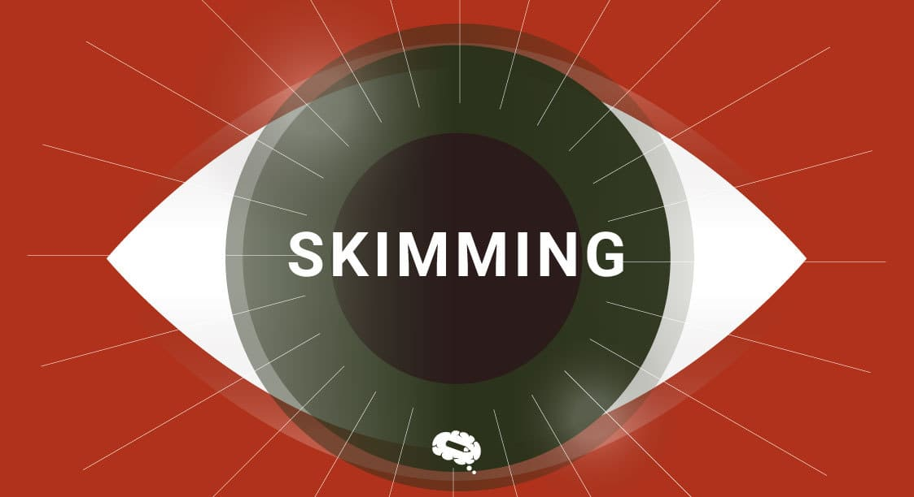

Skimming
Skimming es una técnica de lectura que consiste en pasar rápidamente los ojos sobre un texto para captar las ideas principales y su estructura general, sin detenerse en los detalles. Es útil cuando necesitas obtener una visión general del contenido en poco tiempo. Por ejemplo, al hojear un periódico para encontrar noticias que te interesen, leer títulos y subtítulos de un artículo, o revisar un libro antes de decidir si lo compras.
Scanning
Scanning, por otro lado, es una técnica que implica buscar información específica en un texto, como nombres, fechas, cifras o palabras clave. En lugar de leer cada palabra, tus ojos se mueven directamente hacia los detalles que necesitas encontrar. Esta técnica es muy útil para buscar datos en una tabla, encontrar horarios en un itinerario o responder preguntas concretas en un examen basado en un texto.
EMPEZAR DIAGNÓSTICO
TIEMPO: 15:00
15:00
The teacher was very pleased with her student’s ______ in the English exam.
After hearing the loud noise, the cat ______ under the couch.
She wasn’t feeling well, so she decided to ______ from work that day.
The report was full of ______, making it difficult to understand.
The team is ______ to finish the project before the deadline.
The children enjoyed playing outside in the ______ weather.
The company’s decision to ______ the new technology was a success.
What is the main purpose of the following passage?
The benefits of daily exercise are numerous. It improves physical health, boosts mental clarity, and helps in maintaining a good mood. Regular exercise can also prevent chronic diseases such as heart disease and diabetes.
Which of the following best summarizes the passage?
Many people struggle to balance their work and personal life. It’s important to manage time well, set priorities, and not forget to take time for oneself. Finding a balance between these two aspects can greatly improve your quality of life.
What is the focus of this article?
In a rapidly changing world, learning new skills has become essential for career growth. Professionals who adapt to new technologies and trends are more likely to succeed in the job market.
What is the main idea of the passage?
Technology has greatly impacted the way we communicate. With the advent of smartphones and social media, people are now able to stay connected with friends, family, and coworkers from anywhere in the world.
Which of these sentences summarizes the passage?
Climate change is one of the most urgent challenges we face today. It affects weather patterns, sea levels, and ecosystems across the globe. Immediate action is needed to prevent further damage.
What is the passage mainly about?
This novel explores themes of loss, love, and redemption. The protagonist, after a tragic event, goes on a journey to find peace and understanding with his past.
What is the passage’s main message?
The benefits of meditation include stress reduction, improved concentration, and better emotional regulation. Many people practice meditation to achieve inner peace and mindfulness in their daily lives.
Our store is located at 123 Main Street. We open at 9 AM and close at 6 PM from Monday to Friday. On weekends, we open from 10 AM to 4 PM. For more information, please call us at 555-1234.
Where is the store located?
The Amazon River is the second-longest river in the world, flowing for approximately 4,345 miles. It passes through several countries, including Brazil, Peru, and Colombia, and empties into the Atlantic Ocean.
Which of these countries does the Amazon River pass through?
The Eiffel Tower in Paris was completed in 1889 and stands 324 meters tall. It was initially criticized by many, but today it is one of the most visited monuments in the world, attracting millions of tourists every year.
When was the Eiffel Tower completed?
The museum opens every day except Mondays. Visitors can enjoy free admission on the first Sunday of every month. The museum is closed during major holidays like Christmas and New Year's Day. It offers a variety of exhibits ranging from ancient history to contemporary art.
When can visitors enter the museum for free?
The United Nations (UN) was founded in 1945 after World War II to promote international cooperation. Its main goals are to maintain peace and security, develop friendly relations among nations, and solve international problems. The headquarters of the UN is located in New York City, USA.
What is one of the main goals of the United Nations?
The Great Wall of China is over 13,000 miles long and was constructed over several centuries. It was originally built as a defense against invaders, but today it is one of the most famous historical landmarks in the world. The wall’s construction involved the labor of thousands of workers, many of whom were soldiers and prisoners.
What was the primary purpose of the Great Wall of China?
Fase Final